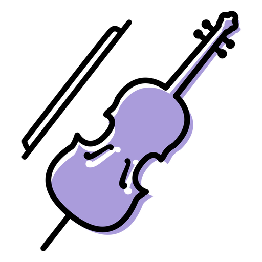
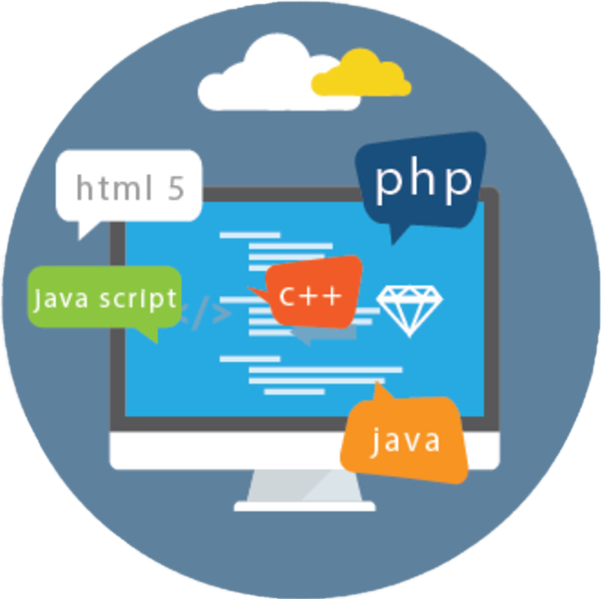
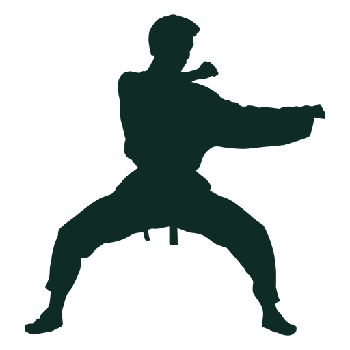

WORK OFFLINE
Mi nombre es Esteban Enrique Cárcamo Urízar , estoy estudiando en el Colegio Científico y Tecnológico Blaise Pascal y llevo el grado de 4to Bachillerato en CCLL con orientación en Computación. Llevo estudiando en dicho Colegio por más de 10 años, desde el grado de kinder, también, independientemente del Colegio, he llevado estudios de música, en la Orquesta Sinfónica de Mazatenango en la cual he paricipado por alrededor de 2 años, mi participación en esta Orquesta ha sido, ser estudiante de violonchelo, por otro lado, he llevado un entrenamiento de la Arte Marcial del Karate, por más de 7 años tengo el cinturón color negro que es una de las cintas de mayor rango. Soy un aficionado a la programación, solamente he recibido orientación sobre este tema por parte del Colegio, anteriormente mencionado, y me llama mucho la atención para en el futuro seguir una carrera con esta orientación. Aparte de la programación tengo otros gustos, como la edición básica de vídeo (como hacer cortes de vídeo, agregar transciones, y otros efectos básicos), más adelante se mostrarán los 3 pasatimepos favoritos que tengo. Por otro lado, he recibido cursos independientes sobre algunos idiomas, he recibido el curso de Inglés en CALUSAC, ubicado en la Universidad de San Carlos de Guatemala, logré llegar hasta el curso 12 de dicho idioma, no pude avanzar más porque debido a la pandemia, que ya todos conocemos, se cerraron varias instituciones, entre estas, está esta institución, también actualmente estoy llevando el curso 12 de Hebreo, junto a mis padres, por aparte, he estudiado un poco de portugués, por medio de clases privadas (hace más de 5 años) y también el año pasado (año 2020) empezé con el curso de Francés básico.

Como anteriormente se mencionó me gusta la música, es uno de mis pasatiempos favoritos, en mi casa poseo mi violonchelo propio con el cual yo practico, también dos guitarras, una que usaba de pequeño y otra más grande que es la que uso actualmente, las guitarras no las suelo usar mucho, pero si me gusta practicar de vez en cuando. En el futuro me gustaría llegar a obtener un piano, para enriquecer mis conocimientos de música.

Como segundo pasatiempo tengo el de la Tecnología en general, me llama mucho la atención todo lo relacionado con esto como el hardware, software, apps, entre otros, dentro de dos años, cuando entre a la Universidad me gustaría seguir una carrera como Ingeniería en Sistemas o Ingeniería Informática, siempre relacionado con este Bachillerato que estoy cursando.

Otro de mis pasatiempos es el entrenamiento de karate, desde hace 7 años estoy entrenando karate, voy por la cinta negra que es uno de los mayores rangos de cintas. También relacionado con el tema de karate he entrenado jiu-jitsu que es otro Arte Marcial que se pelea en el suelo.